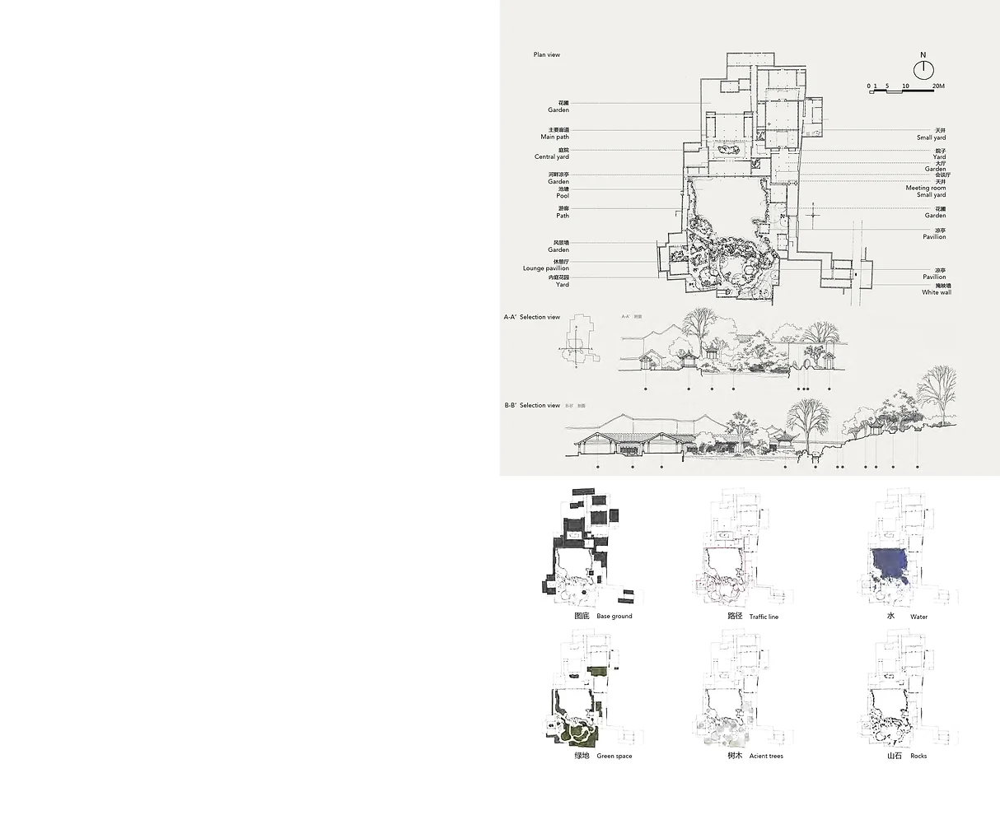
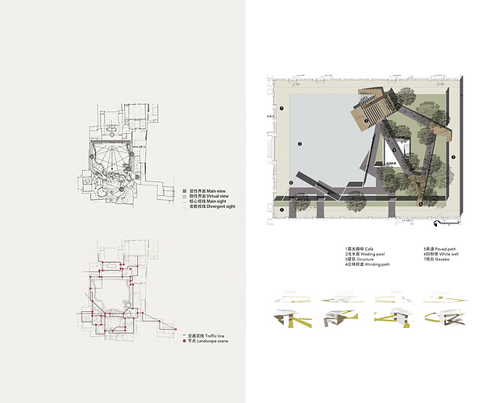
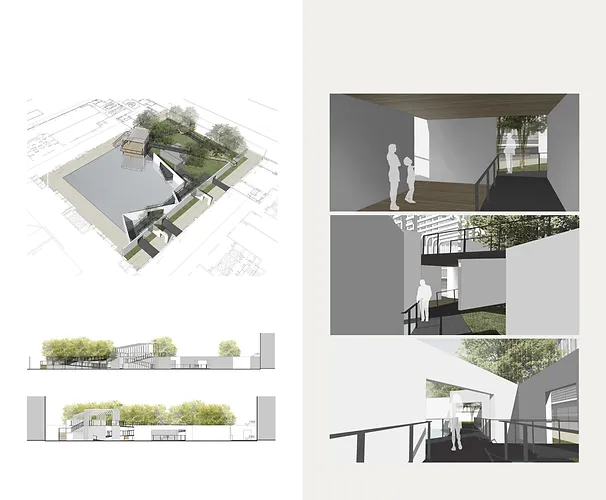

景观设计Landscape Design
项目说明按旧站英文原文保留；时间与个人介绍反映当时的作品集记录。Original portfolio text is preserved in English. Dates and biographical information reflect the archived portfolio; see the academic homepage for current information.

Landscape Design
(03.2016)

Classical Gardens of Suzhou (Classical Gardens of Cultivation), which is one of the best preserved examples of a Ming Dynasty classical garden in Suzhou. It is part of the UNESCO World Heritage Site Classical Gardens of Suzhou on the World Heritage List. The clear composition in plan and the elegance and simplicity of its elements have high aesthetic value.
Classical Gardens of Suzhou (Classical Gardens of Cultivation)

The clear composition in plan and the elegance and simplicity of its elements offers a great background and example to modern landscape design.
The purpose of this program is building a leisure space which can satisfied the requirement of discussion, relaxing and walking space to the staff. The program located in a central yard of office building in Beijing, about 2000 square meters.
Focusing on western garden section, based on the analyse of plan composition, facade and section view, highlights architectures, traffic lines, ponds, green spaces, trees and rockery scenes to find the relationship of nature, structure and human.

Not limited to only imitate the space arrangement or apply mechanically the traditional visual symbol, but using designing thinking to translate traditional garden language into modern landscape design. The twisting paths, paper-like white wall, wading pool together with the airhead café and gazebo, yields varied space and visual effect. Building a harmonious and implicative spiritual office leisure space.